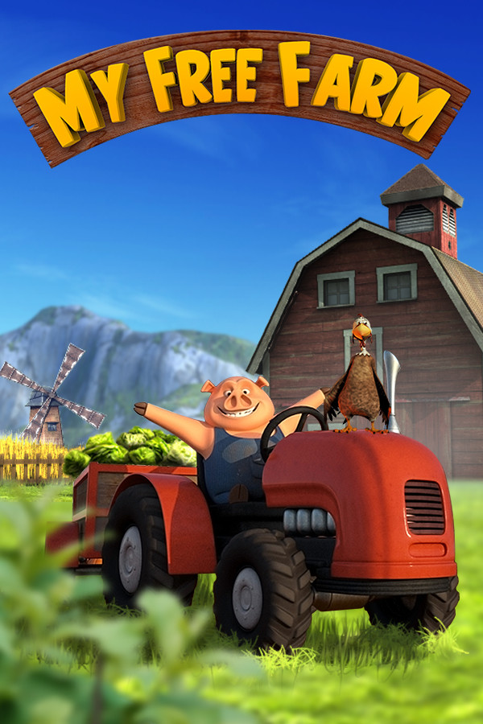

My Free Farm
My Free Farm
Details
|  | |
| Playtime | Not Played |
| Last Activity | Never |
| Added | 23/04/2020 |
| Modified | Never |
| Completion Status | Not Played |
| Source | Steam |
| Platform | PC |
| Release Date | 26/08/2019 |
| Community Score | 57 |
| Critic Score | |
| User Score | |
| Genre |
Casual Free to Play Simulation |
| Developer |
upjers |
| Publisher |
upjers |
| Feature |
In-App Purchases Single Player |
| Links |
PCGamingWiki Community Hub Discussions Guides Store Page News |
Description

A Farm Game of Superlative Proportions
Breathe in the fresh country air in My Free Farm! The fields are alive with crops you can water and later harvest. There’s never a dull moment as you discover and unlock various specialty farms, such as the tree nursery, a farmer’s market with a myriad of flowers and even a mountain farm high up above the valley.
Declare animals as super animals to ramp up their potential in special events, and grow enormous fruit on the monster fruit farm in this riveting tycoon game. Head on over to Mootown and explore this entertaining farm simulation.

Don’t Be Scared of the Competition
The smartest farmer has the biggest potatoes in Mootown – after all, this farm game is an ingenious business simulation. You can trade goods with other players to sell them to customers. Regular competitions add another yet another exciting facet to the game. Farmers’ clubs allow you to band together with other players and compete for shiny trophies for your club.
The sheer variety of features in this captivating farm simulation will leave you speechless:
- Seasonal events with valuable rewards
-
An astonishing variety of field crops, trees, flowers and animals
in different areas
- Guild and friendship features
-
Refine products and establish extensive production chains
-
Special features such as the veterinarian, animal nursery, monster
fruit farm, butterfly house and cow racing barn
-
Ever changing challenges in the picnic area and forestry
-
Countless farm expansions including pony riding, a biofuel plant,
vehicle hall and hiking trips
- Decorations for your farm and farmhouse
-
Collectibles for your shadowbox and lovingly animated collectible
sheep
-
Two towns with quirky characters, where goods can be used and
traded
- Over 1500 quests in 12 quest series!

Until the Cows Come Home
Pig Gordon will show you the ropes on your farm and introduce you to many features in Mootown and Pondsville. Aside from growing veggies and food for your livestock, you can also engage in forestry. Your carpentry can turn tree trunks into myriad of products that will delight the Farmies – the customers on your farm. Customers in the picnic area are Munchies; you can pamper them with refreshing drinks and tasty snack food.

Vegetable Mashing, Ice Cream Delivery and Alien Invasions
Countless events throughout the year will provide plenty of action. Mash vegetables to find goodies underneath, or set out to deliver ice cream to the whole town during the hottest summer days. Around Halloween, you might find your animals abducted by aliens – and it’s up to you to save them by pelting invaders with candy bombs.
Christmas, Easter, and many other occasions have their own special events in this charming farm game. Of course, your farmhouse and town can also be spruced up with lovely seasonal decorations.
Discover the entertaining farm simulation: Play now!
Note: My Free Farm can only be played online. Existing browser game accounts cannot be linked to Steam!